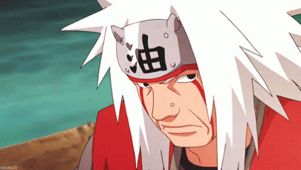

나루토의 등장인물. 성우는 오오츠카 호우츄(일) / 장광(한) / 바응이(월) / 데이비드 로지(미). 소년시절은 나라 토오루 / 신용우. 나뭇잎 마을 닌자이자 소설가. 과거 제2차 닌자대전때 오로치마루 & 츠나데와 더불어 대단한 활약을 보여 전설의 세 닌자라 불리며 타국에까지 이름을 떨친 굉장한 실력자며 많은 인술을 알고 있으며, 작중에서는 주로 두꺼비를 불러내는 소환술이 두드러졌다. 1인칭은 와시(儂). 본편에서는 50대란 중년의 나이임에도 체구가 굉장히 건장하다. 훗날 성인이 된 나루토보다도 11cm 가량이나 키가 크다. 
| 닌자 등록번호 | 002301 |
| 생일 | 11월 11일(전갈자리) |
| 나이 | 50-51세 → 54세(질풍전) |
| 신장 | 191.2cm |
| 체중 | 87.5 kg |
| 혈액형 | B형 |
| 닌자 학교 졸업 | 6세 |